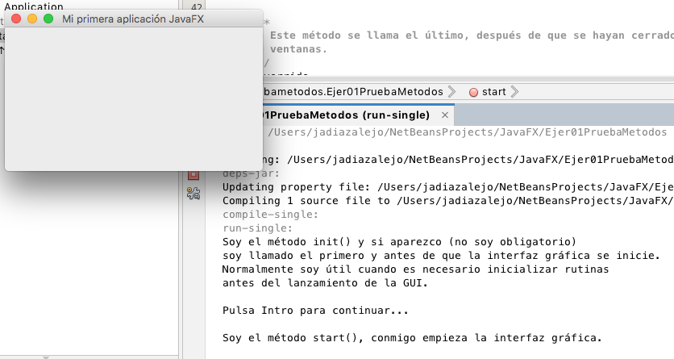

En este primer ejemplo vamos a conocer los principales métodos de la clase principal, para ello mostraremos una ventana con título y mostraremos mensajes en cada uno de los métodos.
- Añade la librería JavaFX.
- Modifica el check de Compile on save de las propiedades.
- Añade la ruta del campo VM de properties - > RUN
- Cuidado con las clases seleccionadas en los import, deben ser de la clase javafx.
- Antes de que la ventana se cree se ejecutará el método init().
- El segundo método en ejecutarse será el método start(Stage primaryStage) que recibirá el escenario principal, le pondrá un título y lo mostrará.
- Por último, y cuando la ventana la cerremos se ejecutará el método stop()
